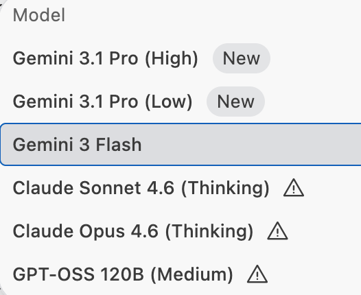

Gemini Answer
Table of Contents
Question
explain the difference of the models

Answer
Based on the image provided, here is a breakdown of the differences between these AI models, categorized by their family and optimization goals:
1. Gemini Series (Google)
- Gemini 3.1 Pro (High): This is Google's flagship multimodal model. The "High" designation typically refers to the version optimized for maximum reasoning, deep coding ability, and complex problem-solving. This is the one you'd use for high-fidelity architectural logic.
- Gemini 3.1 Pro (Low): Likely a version of the Pro model optimized for lower latency or specialized for less complex tasks. It maintains the "Pro" architecture but may have different precision or truncation to make it faster/more efficient while still outperforming "Flash" models.
- Gemini 3 Flash: The "Flash" tier is built for speed and high-throughput. It is designed to be extremely lightweight and fast, making it ideal for tasks like simple data extraction, summarization, or real-time UI interactions where sub-second latency is more important than deep reasoning.
2. Claude Series (Anthropic)
- Claude Sonnet 4.6 (Thinking): Sonnet is Anthropic’s "balanced" model—it is generally faster than Opus but smarter than Haiku. The "(Thinking)" tag indicates that this version is utilizing a Reasoning / Chain-of-Thought mechanism (similar to OpenAI's o1), where the model spends extra "compute time" thinking through the logic before it starts writing code.
- Claude Opus 4.6 (Thinking): This is the high-end flagship model. When coupled with the "Thinking" mode, it represents the absolute peak of reasoning capability in this list. It is designed for the most complex scientific, mathematical, and coding challenges where absolute accuracy is required.
3. GPT-OSS Series
- GPT-OSS 120B (Medium): This appears to be an Open-Source (OSS) model (likely based on a foundation like Llama or similar) with 120 billion parameters.
- 120B: This is a very large parameter count for an open-source model, putting it in the same weight class as many proprietary models.
- Medium: Suggests a mid-range variant in its specific series (where there might be a smaller 70B or a larger 400B+ version).
Which one should you use for our Backtest task?
- For Complex Logic/Debugging: Stick with Gemini 3.1 Pro (High) or Claude Opus 4.6 (Thinking). They are best at catching the subtle logical bugs we encountered with the
is_dpcolumn. - For Fast Documentation/Formatting: Gemini 3 Flash is excellent for quickly updating things like the color code docstrings we just added.